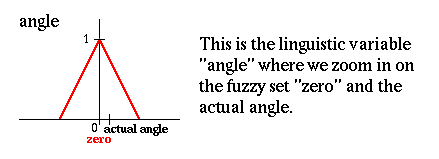

Применим правило
Если угол равен нулю И угловая скорость равна нулю, тогда скорость равна нулю
к значениям, которые были выбраны на предыдущей странице:
Щелкните на знаке [Подробно], чтобы проследить получение результата:

[Подробно]
Здесь представлена лингвистическая переменная "угол", отображаемая
нечетким множеством "ноль" и реальный угол наклона маятника.